MWGallegos
On the Persistence of Abstraction and the Joy of the Figurative
— Essay by Phil Tarley
For the last few years, painter Margaret Gallegos has been working on a vast suite, an ode, if you will, to figurative portraiture. Known for her massive abstracts filled with raucous riots of color, Gallegos has painted a troupe of actors that have been graced with her psycho-emotional obsessions. The result is a congenial mix of thirty-something canvases brimming with a cacophony of moody madness, sorrow and a myriad of delights: a cavalcade of transcendently colorful players.
Each of the artist’s paintings centers on a head or a figure, whether it’s the highly abstracted
La Manita, Mamita
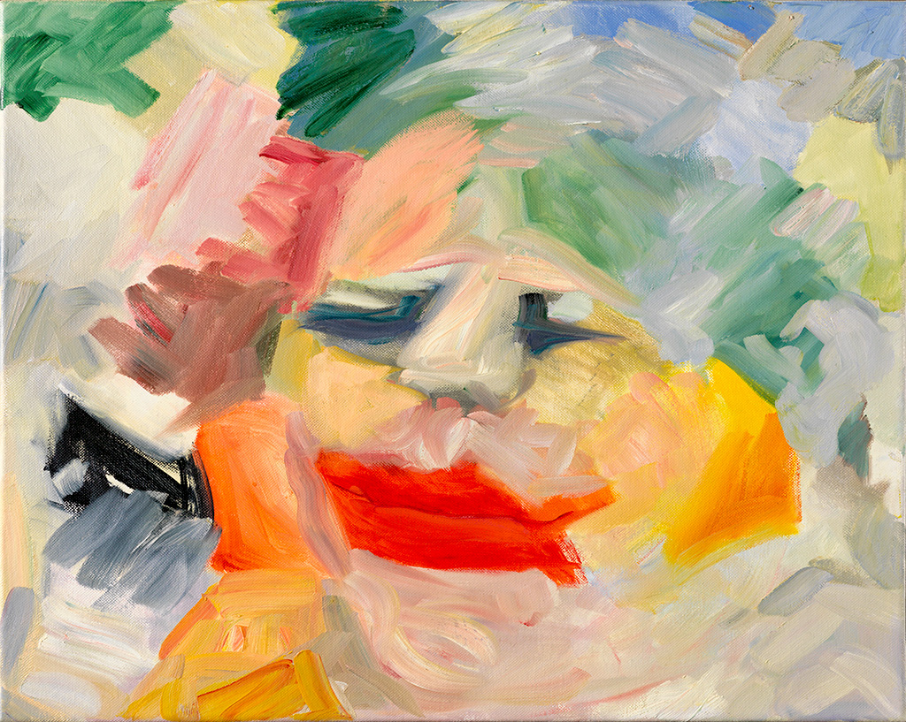
La Manita, Mamita
2015, oil on linen, 16 x 20 in, 41 x 51 cm
©2000-2015 MWGallegos
, 2015, the geometrically composed, Living in Interesting Times
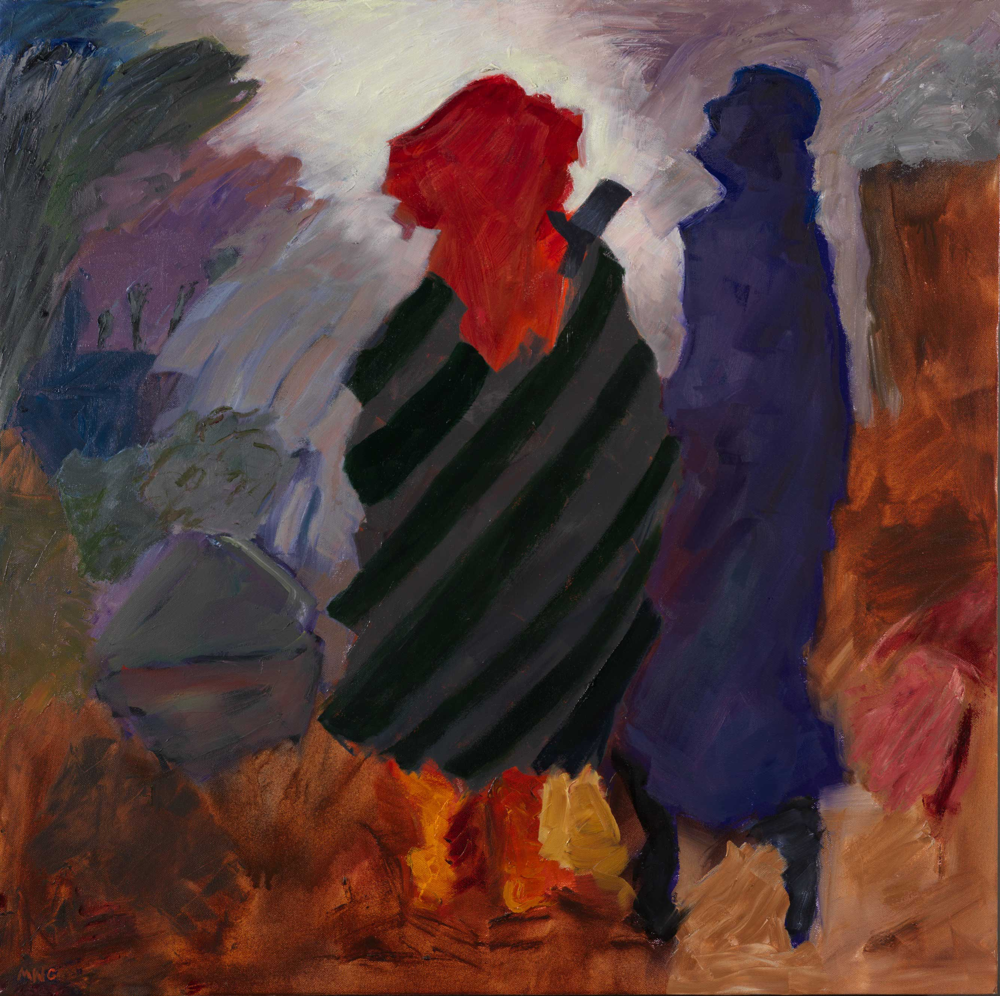
Living in Interesting Times
2015, oil on canvas, 36 x 36 in, 91 x 91 cm
©2000-2015 MWGallegos
, 2015, or the Modigliani-inflected Silvia,
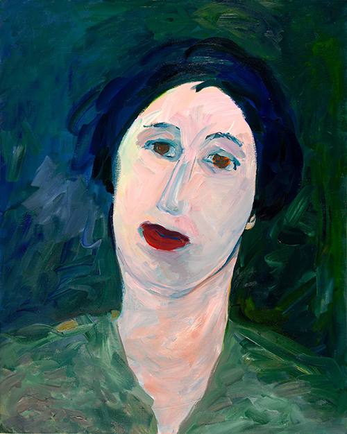
Silvia
2015, oil on linen, 30 x 20 in, 76 x 61 cm
©2000-2015 MWGallego4
2015. Occasionally, the artist will paint two people, perhaps in a street scene, but even though her canvases skew figurative, Gallegos can’t resist giving way to creative flights of phantasmagorical abstraction. Rapturous, mysterious, regal, or somber, the best of the figures, like Woman of Sorrows,
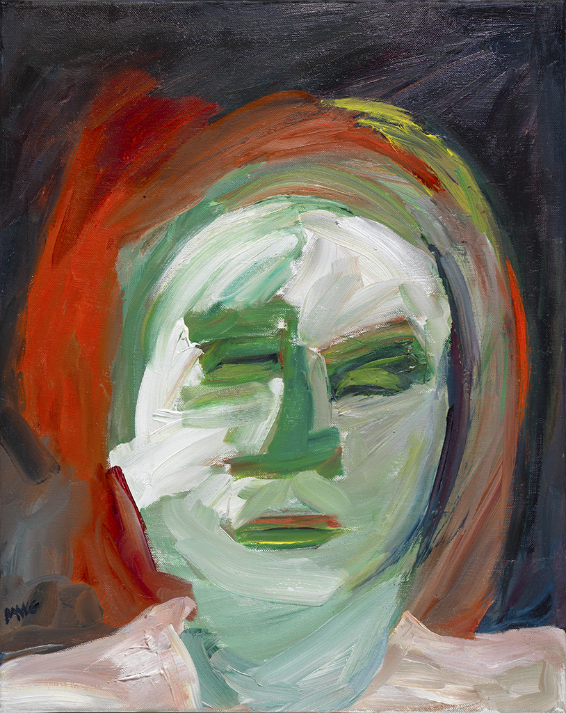
Woman of Sorrows,
2015, oil on linen, 18 x 13 in, 46 x 33 cm
©2000-2015 MWGallegos
2015, Green Jeff
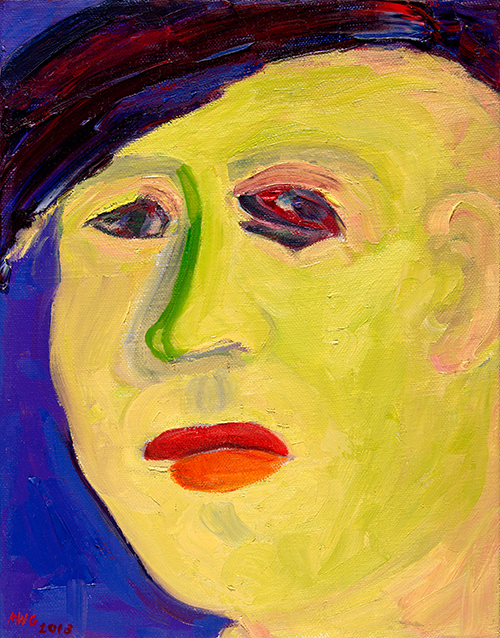
Green Jeff
2013, oil on linen, 16 x 11 in, 36 x 28 cm
©2000-2015 MWGallegos
, 2013, and most beautifully, The Seeress
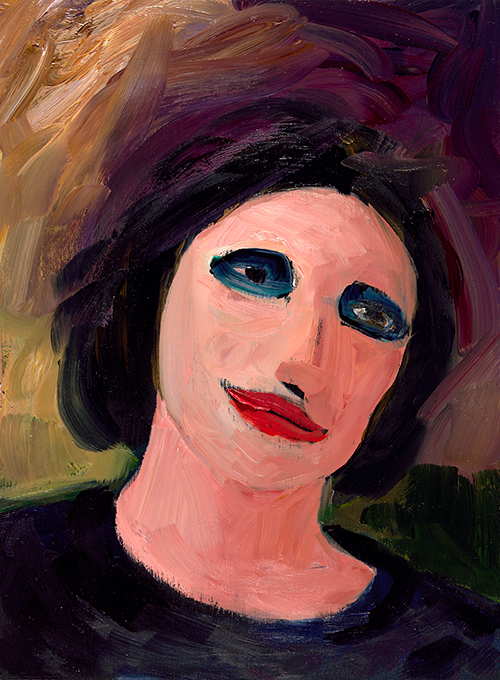
The Seeress
2014, oil on panel, 12 x 9 in, 31 x 23 cm
©2000-2015 MWGallegos
, 2014, share deeply communicative eyes. In some, they are expressive smudges, in others, world-heavy orbs. There is also a suggestive tension between the expressiveness of the depicted figures and their close-lippedness emphasized by strong and striking crimson brushwork. Gallegos’ use of brilliant colors—sometimes sparingly, other times forcefully—creates an explosion of movement, hue and intensity.
The artist’s portraits are infused with sub-textual references to emotional nuances stemming from her own personal narrative and remembrances of things past. Woman on the Edge
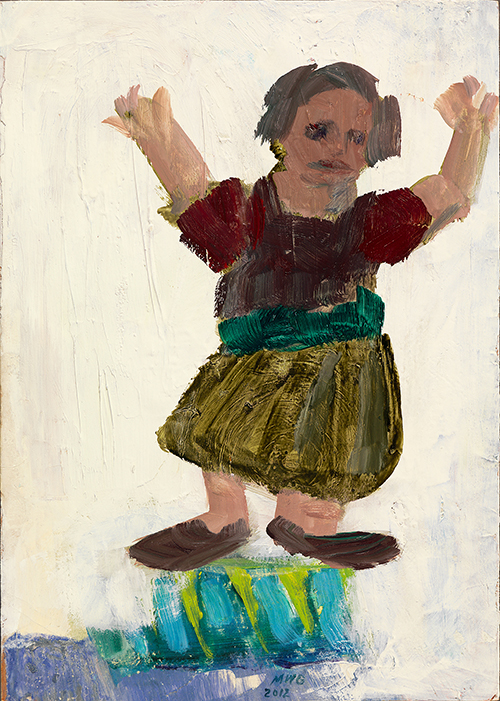
Woman on the Edge
2013, oil on papier huile on panel, 12 x 9 in, 31 x 23 cm
©2000-2015 MWGallegos
, 2013, perhaps the most literal of the oeuvre, is a self-portrait, where Gallegos tries to maintain her balance, teetering on the “edge” of her reality. Portrait of the Artist's Mother, Fading,
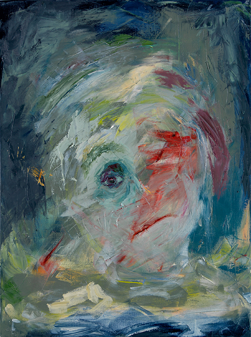
Portrait of the Artist's Mother, Fading
2011, oil on canvas, 24 x 18 in, 61 x 46 cm
©2000-2015 MWGallegos
2011, is a confusion of the palette with a dimming of the senses. The vibrant gash-mouth, the Gallegos touchstone, here suggests intense passion, while one remaining eye, brimming with sadness, forms the very center of this emotionally stormy piece. The relationship between the subject and the background speaks to an ongoing dynamic not only within the subject, but in the artist’s perception of it. As the subject disappears in a maelstrom of color, it is her emotional appeal to the viewer that lingers.
Gallegos is not interested in portraying reality. Rather than the faces themselves, she wants to interpret her feelings towards the faces through her painting. Many artists perceive the world and interpret their emotional lives by nature of their own gender, and though not a feminist artist, Gallegos’ body of work is peopled almost exclusively by women. Men, if they are depicted, are almost always sexually ambiguous like in Sketching in the Park
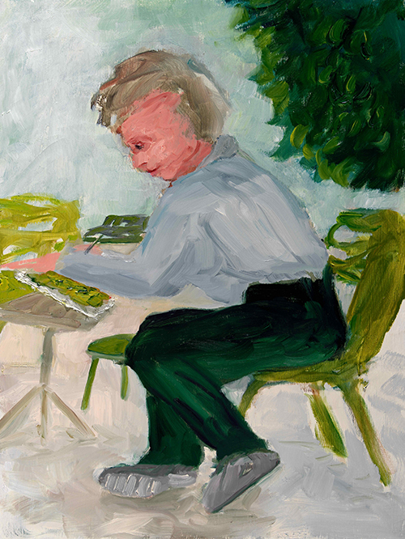
Sketching in the Park
2014, oil on wood panel, 16 x 12 in, 41 x 30 cm
©2000-2015 MWGallegos
, 2014, and Living in Interesting Times
Living in Interesting Times
2015, oil on canvas, 36 x 36 in, 91 x 91 cm
©2000-2015 MWGallegos
, or men are somewhat monstrous, like in Dread and Resistance
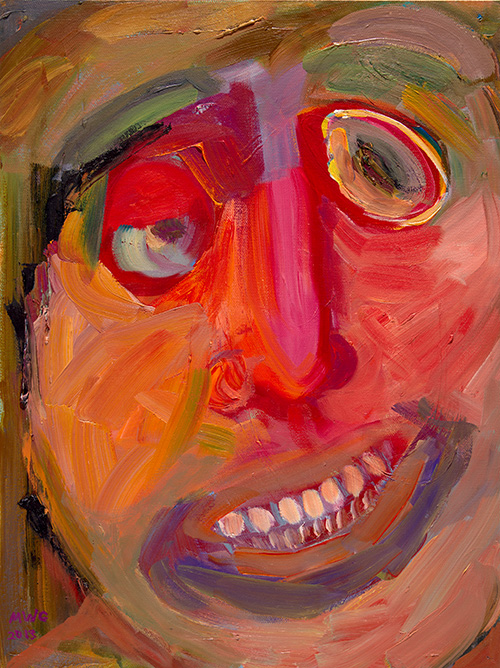
Dread and Resistance
2013, oil on linen, 16 x 20 in, 41 x 51 cm
©2000-2015 MWGallegos
, 2013 or
Copperhead
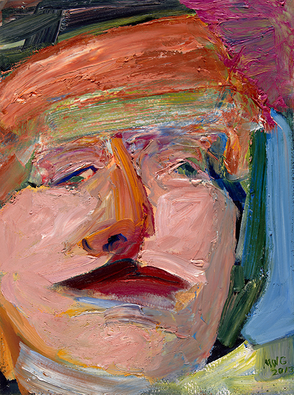
Copperhead
2013, oil on papier huile on panel, 12.25 x 9 in, 31 x 23 cm
©2000-2015 MWGallegos
, 2013. Yet, Gallegos is not out to desecrate men. Not at all! In the world inhabited by this painter, she seems to rarely think of men. Her work searches for an understanding of the inner and outer lives of women, a dynamic she explores, gives meaning to, and entertains through those who interest her and draw the attention of her art. Her sensitive canvases offer up a world where women look and leer, laugh and love and are transformed by Gallegos’ highly nuanced examinations of their humanity.
As Gallegos takes her painting into its newest iteration in 2015, she has begun to break down the literal into interesting shapes and patches of color through strong diagonal brushstrokes. In Woman and Child with Basket
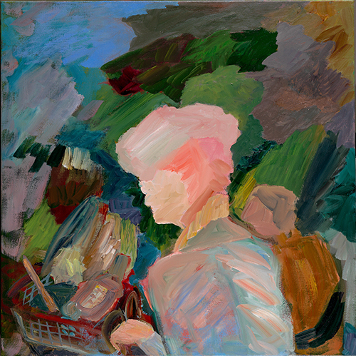
Woman and Child with Basket
2015, oil on linen, 24 x 24 in, 61 x 61 cm
©2000-2015 MWGallegos
, Living in Interesting Times
Living in Interesting Times
2015, oil on linen, 16 x 20 in, 41 x 51 cm
©2000-2015 MWGallegos
, and especially Winter Skater
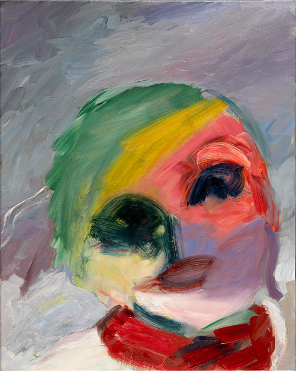
Winter Skater
2015, oil on linen, 16 x 20 in, 41 x 51 cm
©2000-2015 MWGallegos
, the traditional Gallegos stylistics are present, but reinterpreted. Ultimately, it is Gallegos’ bold brush and brash moving colors that linger in the mind’s eye and offer up the artist’s perceptions in striking and evocative ways.
Many of the artist’s canvases are painted in Paris and the love of French painting is certainly at play in her massive body of work. Her use of striking saturated color mirrors her fascination with style, affect and emphatic intensity. While from a distance, some of the figures could appear to be scrawled in a childlike coloring book manner, works like Dread and Resistance
Dread and Resistance
2013, oil on papier huile on panel, 16 x 12 in, 41 x 30 cm
©2000-2015 MWGallegos
, 2013, Wounded Jester
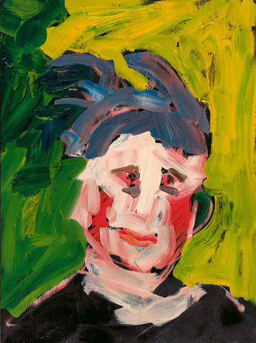
Wounded Jester
2014, oil on wood panel, 12 x 9 in, 31 x 23 cm
©2000-2015 MWGallegos
, 2014, and Green Jeff
Green Jeff
2013, oil on linen, 14 x 11 in, 36 x 28 cm
©2000-2015 MWGallegos
, 2015, each have a distinct psychological force that raises them far above any kind of naïf sensibility.